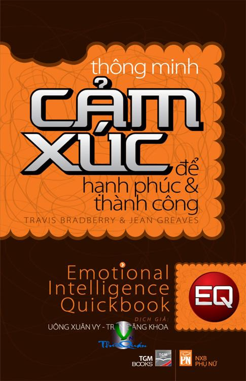

« Back
Thông Minh Cảm Xúc Để Hạnh Phúc Và Thành Công
By Travis Bradberry, Jean Greaves

Mang Chất Lượng Vào Kiến Thức
Trí Tuệ Cảm Xúc (EQ) Dự Báo Số 1 Về Thành Công Trong Sự Nghiệp Và Cuộc Sống
Cảm Nhận Về Quyển Sách
Vài Dòng Từ Các Tác Giả
Lời Nói Đầu
Phần ITRÍ TUỆ CẢM XÚC THẬT SỰ LÀ GÌ?Chương 1KHÁM PHÁ
Chương 2NHỮNG ĐIỀU ĐÁNG KINH NGẠC VỀ TRÍ TUỆ CẢM XÚC
Phần IIKHÁM PHÁ VỀ TRÍ TUỆ CẢM XÚC CỦA Bạnchương 3NHỮNG CÂU HỎI QUAN TRỌNG
Phần IIINÂNG CAO TRÍ TUỆ CẢM Xúcchương 4THAY ĐỔI TƯ DUY
Chương 5XÂY DỰNG KỸ NĂNG
Phần IV Ứng Dụng Trí Tuệ Cảm Xúcchương 6ỨNG DỤNG TRÍ TUỆ CẢM XÚC TRONG CÔNG VIỆC
Chương 7ỨNG DỤNG TRÍ TUỆ CẢM XÚC TRONG CUỘC SỐNG GIA ĐÌNH
Lời Cảm Ơn
Về Các Tác Giả
Chú Thích